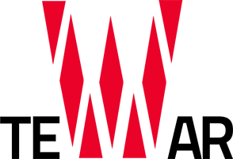

A propos
Qui suis-je ?
Je m’appelle Zoé Louyot, et je suis étudiante en première année de DUT MMI (Métiers du Multimédia et de l’Internet) à l’IUT Belfort-Montbéliard. J’ai créé ce site web dans le cadre d’un projet universitaire, dont le thème est « Dark side of the web », ici le côté obscur concerne la pollution numérique. J’ai choisi de m’appuyer sur le film « Snowden », dans lequel l’utilisation d’Internet et du numérique est très présente.
Les données que nous mettons et enregistrons en ligne consomment énormément d'énergie. Cela contribue évidemment à la pollution et au réchauffement climatique. Il est temps pour nous tous de prendre conscience de cela. Nous devons faire ce qui est possible pour réduire cette pollution, et sauver notre planète avant qu’il ne soit trop tard. Je vous présente sur ce site quelques astuces simples pour réduire votre impact écologique lié au numérique, et bien sûr pour protéger votre vie privée. Agissons pour notre planète.
Autres projets
-  Tewar par Sarah Hadri
 Borken Mirror par Joris Lin
Borken Mirror par Joris Lin
- Polluting video games par Nicolas Louisin
 Unfaced par Benjamin Lugan
Unfaced par Benjamin Lugan
 Future.Of.The.World par Ilias Machmoum
Future.Of.The.World par Ilias Machmoum
- IA : un avenir pas si rose ? par Charles Mangin
- Rescom par Floran Marchal
 CLAY par Maëlle Marchal
CLAY par Maëlle Marchal
- Les DATA du CLOUD par Julien Metzger
 J.A.R.V.I.S par Jonas Morisot
J.A.R.V.I.S par Jonas Morisot
 Verax par Claire Oudot
Verax par Claire Oudot